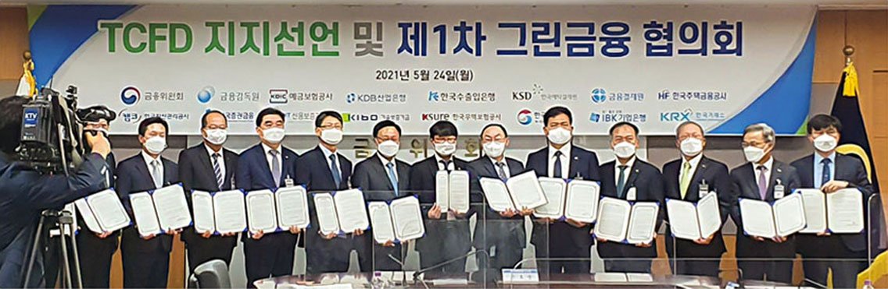
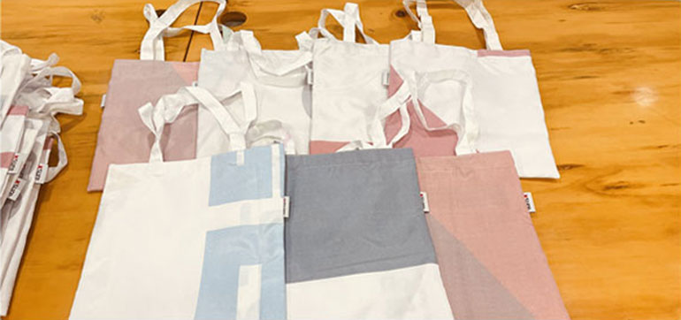
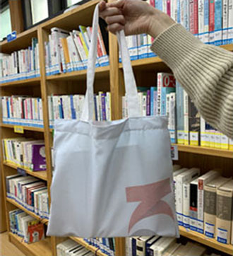
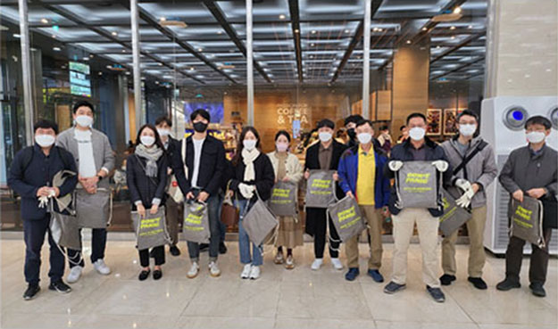
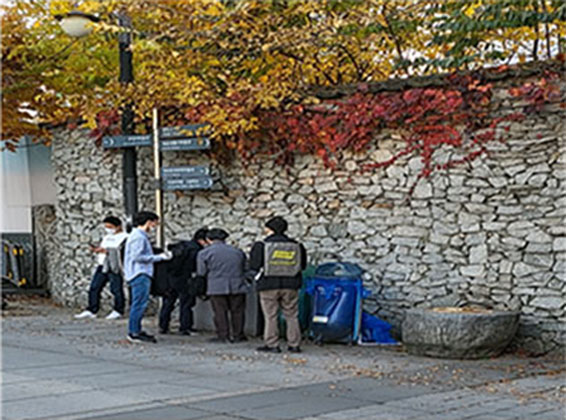

ESG 주요 활동
환경(Environmental)
친환경 분야에 대한 적극적인 금융지원
- 중소·중견기업 ESG 경영 확산을 위한 무역보험 우대지원 지침, 중장기성 보험 ESG 우대 지침 등 각종 ESG 지원 정책을 수립하여 친환경 기업에 대한 금융 지원을 확대하고 있습니다.
- 또한, G20이 참여하는 TCFD(기후변화 재무정보공개 협의체) 지지 선언을 통해 기후 위기 극복 및 탄소 중립을 위한 그린 금융 지원에 앞장 서고 있습니다.

업사이클링을 통한 친환경 자원 재순환 실천
- 사회적기업을 통하여 업무 추진 과정에서 발생하는 폐현수막을 에코백, 필통으로 재활용하고 (’22년 270개 제작), 이를 어린이 도서관에 기부하는 등 친환경 가치의 확산을 위해 노력하고 있습니다.


플로깅 활동으로 지역 환경 개선 생활화
- 사회적기업의 플로깅* 키트를 활용한 임직원 플로깅 활동을 통해 임직원의 지역 환경 개선 활동을 생활화하고 있습니다.
* ‘이삭을 줍다’라는 뜻을 가진 스웨덴어(Plocka Upp)와 조깅(Jogging)의 합성어로, 조깅을 하면서 동시에 쓰레기를 줍는 활동을 의미

